Westend Signature
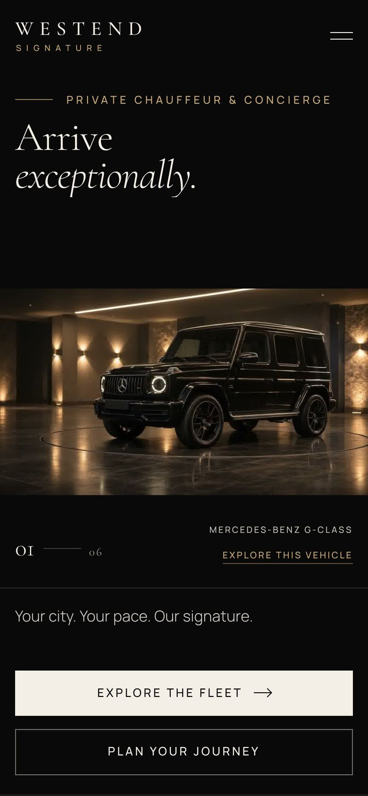
001001.jpg — mobile hero
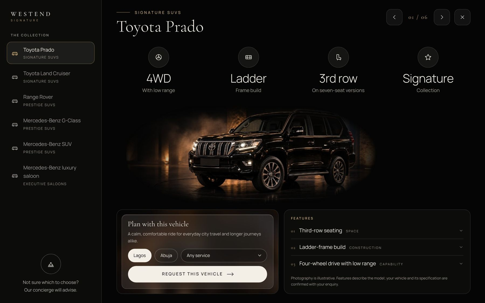
001002.jpg — vehicle view
A UX/UI case study of a private chauffeur and concierge website for Lagos and Abuja.
From a scroll-driven fleet reveal to an enquiry that lands, pre-written, in WhatsApp.
Experience design & creative direction
Niyi Yaroglah / Vision and Sounds
Project overview
A one-page brand website that lets a visitor feel the fleet, choose a vehicle and send a useful journey enquiry in under a minute.
Delivered scope
Art direction, scroll-driven hero, fleet showcase, dashboard-style vehicle view, booking form with place and email suggestions, WhatsApp hand-off, motion and accessibility layer, privacy and terms templates.
Implementation
A single static index.html with embedded CSS and JavaScript. GSAP 3.12.5 + ScrollTrigger, Lenis 1.1.13. No build step, no backend, no payments.
Timeline
24–26 October 2026 · 35 commits
Counts describe the implementation, not business performance.02
Make the arrival feel certain before the car is even booked.
Then turn that feeling into an enquiry the team can act on: city, service, vehicle, date, pickup and destination, in one message.
Design tension
Cinematic presentation sells discretion and quality, but a chauffeur enquiry is practical and time-sensitive. Every flourish has to stay out of the way of “where, when, which car”.
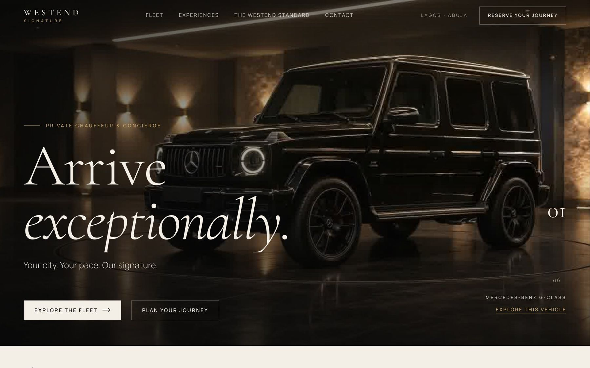
Problem framing derived from the brief and the implementation, not participant research.03
Research & supporting evidence
Client brief
Private chauffeur and concierge for Lagos and Abuja. Westend-owned fleet. Enquiries to WhatsApp +234 703 651 7790. No prices or availability promised online.
Project instructionsSource audit
6 vehicles, 3 collections, 5 experiences, 14 form fields, 297 sequence frames (296 used), 13 illustrative images with a written disclosure.
index.html, assets/Interface inspection
Captures at 1440 × 900 and 390 × 844 show the real layouts, the vehicle dialog, the menu and live pickup suggestions.
Browser, 31 Oct 2026Commit history
35 commits show what was tried, kept and reverted, including two reverted motion ideas.
git logEvidence gaps
No interviews, surveys, analytics or booking data were available. None are invented here.
No user dataEvidence audit completed 31 October 2026.04
Who it is for
Hypothesis 01
The arriving executive
Lands at Murtala Muhammed or Nnamdi Azikiwe with meetings across the city. Wants to know the car will be there, and who to message.
Likely task
Book an airport pickup plus hourly service.
Hypothesis 02
The assistant or planner
Books on behalf of a principal, family or wedding party. Needs clear vehicle choices, passenger needs and a summary to forward.
Likely task
Brief a multi-stop day with requirements.
Hypothesis 03
The returning client
Already trusts Westend and arrives on a phone. Wants the shortest path to WhatsApp with the details pre-filled.
Likely task
Quick enquiry from the hero strip.
Audience hypotheses inferred from content, service types and form options. Not validated.05
Design process
Editorial foundation
Obsidian and ivory sections, Cormorant Garamond display with Manrope UI, fleet, experiences and booking on one page.
24 OctImagery & hero
Illustrative fleet and service images. Hero moved from still keyframes to a 296-frame turntable drawn to canvas on scroll.
25 OctVehicle view
From a modal, to full-screen, to a dashboard: collection sidebar, at-a-glance tiles, a plan card and a feature list.
25 OctScroll storytelling
Progress line, word reveals, manifesto, expanding band. Two ideas were tried and reverted when they competed with content.
25–26 OctEnquiry to WhatsApp
Place and email suggestions, requirement chips, and a form that writes the WhatsApp message for the visitor.
26 OctSequence reconstructed from the commit history.06
Information architecture
One page, read in the order a booking decision is made. Vehicle details open in a dialog.
Implemented sections and dialog.07
Three ways in, one way out
Vehicle-led
- Explore the fleet
- Explore this vehicle
- Plan card: city & service
- Form pre-filled
- Send to WhatsApp
The plan card carries city, service and vehicle into the booking form, so the choice is never re-typed.
Journey-led
- Plan a journey strip
- City, service, date
- Pickup suggestions
- Validate required fields
- Send to WhatsApp
Required: name, email, phone, city, service, date, time, pickup, passengers and privacy consent. Errors are announced and focus moves to the first one.
Direct
- Menu or footer
- WhatsApp · Message us
- Open chat
The website never claims an enquiry was sent: the visitor reviews the draft and taps Send in WhatsApp.
Implemented routes. The WhatsApp send happens outside the website.08
Retrospective wireframes
Reconstructed from the final implementation; not original design-stage artefacts.09
The arrival sequence
Scrolling turns a lit turntable through all six cars. Each car gets its own headline, and the copy changes in the dark moments between them, so nothing swaps in view. Scrolling up plays it in reverse.
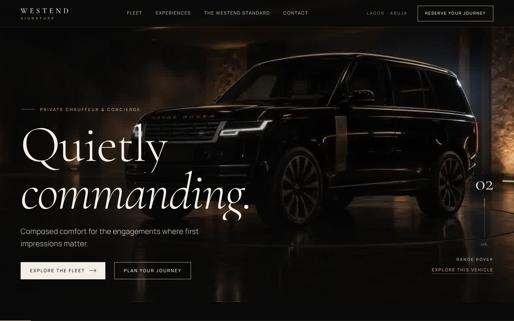
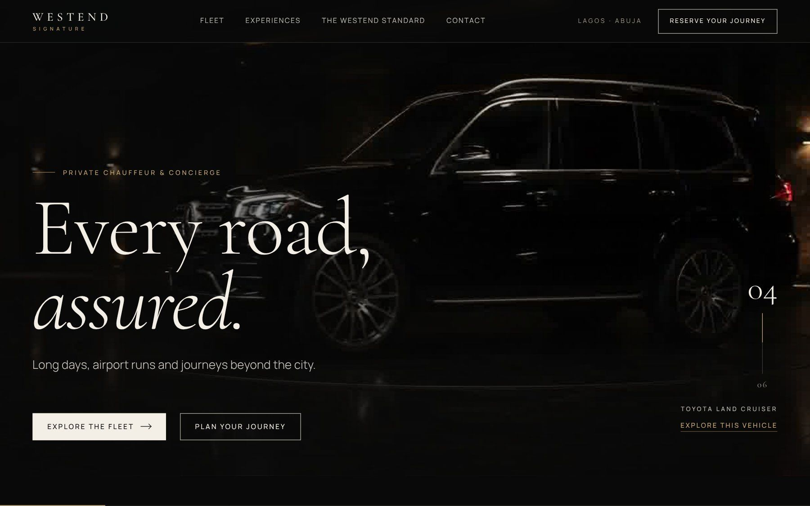
04 — Every road, assured.
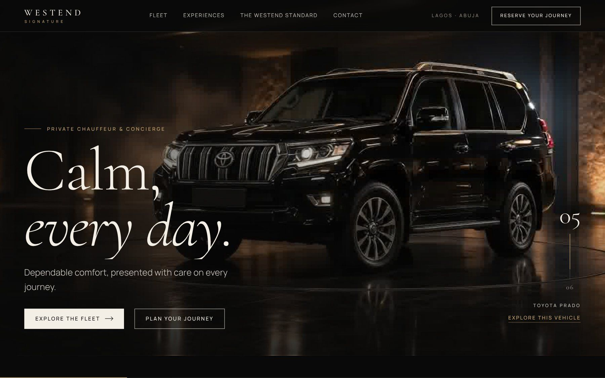
05 — Calm, every day.
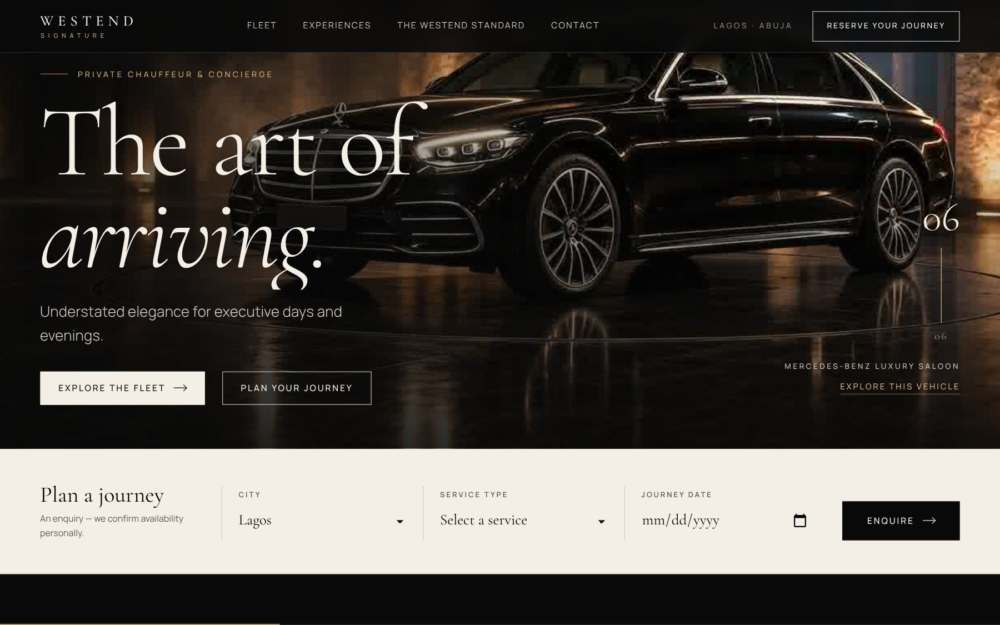
06 — The art of arriving.
Loading
Frame 002 first, then in order, six at a time. Phones use every second frame: about 3.4 MB instead of 6.7 MB.
Copy per car
“Arrive exceptionally.” · “Quietly commanding.” · “Room for everyone.” · “Every road, assured.” · “Calm, every day.” · “The art of arriving.”
Fallback
With reduced motion or failed scripts, a single lit frame is shown and all content is visible immediately.
Actual UI capture. Vehicle imagery is AI-generated and disclosed on the site.10
A fleet you move through
On wide screens the fleet pins for about 210 vh and travels sideways through three collections, with labels and progress kept in sync.
Tabbing into an off-screen card scrolls to its panel. Smaller screens get stacked cards with no pinning.
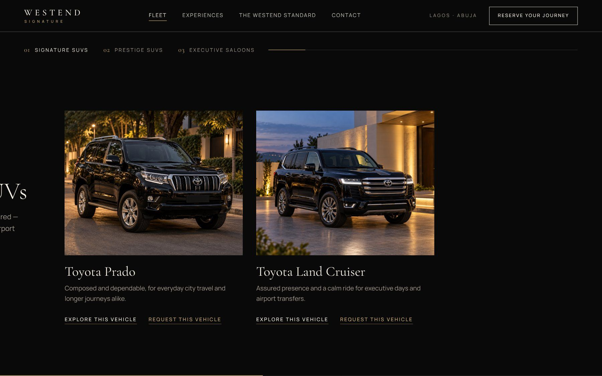
Actual UI capture.11
Details before the enquiry
A dashboard rather than a spec sheet: the collection on the left, four at-a-glance tiles, the car in the arrival hall and an expandable list of published model features.
- Switch by sidebar, previous/next, arrow keys or swipe
- “Plan with this vehicle” sends city, service and car to the form
- No prices, capacities, model years or availability, by design
- Native
<dialog>: focus contained, Escape closes
Actual dialog capture. Feature lists were checked against public model sources in October 2026.12
The actual mobile experience
Stacked hero, swipeable collection row, a full-screen menu that traps focus, and 44 px tap targets throughout.
Hero
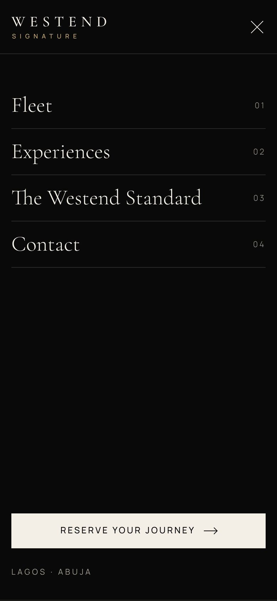
Menu
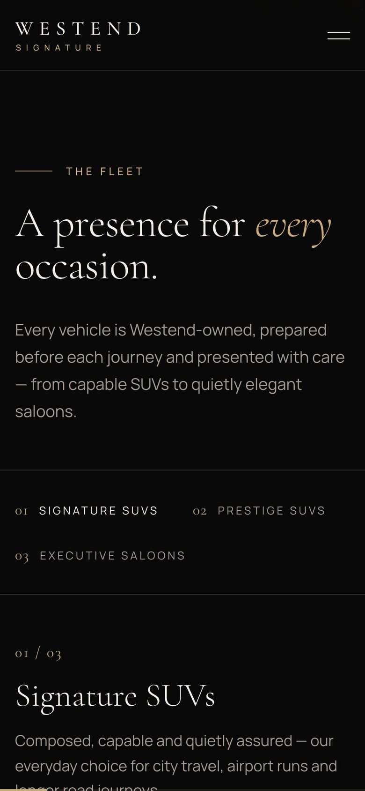
Fleet
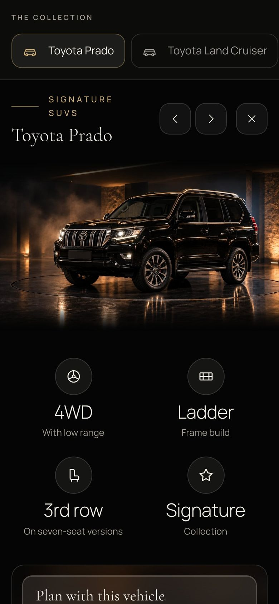
Vehicle view
Browser captures at 390 × 844 CSS pixels, 31 October 2026.13
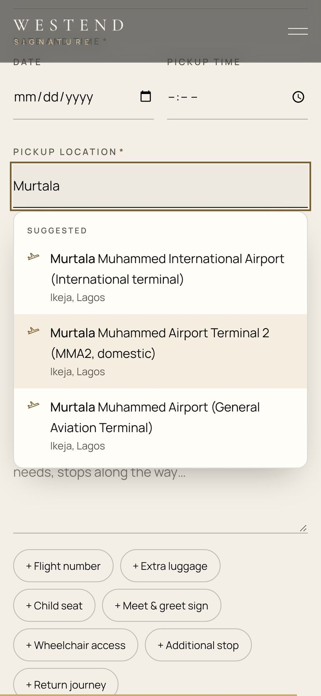
An enquiry that writes itself
Places as you type
Lagos and Abuja airports, hotels and districts appear instantly, favouring the chosen city. Live OpenStreetMap results, limited to Nigeria, fill the gaps.
Small helpers
Email domains after “@”. Tap-to-add chips: flight number, child seat, meet & greet sign, wheelchair access, return journey.
Honest status
“Your details open in WhatsApp, ready to send to us. This is an enquiry, not a confirmed booking.” The site never says it was sent.
Actual UI capture. WhatsApp opens a draft for the visitor to send.14
Key design decisions
01
Presence before specification
The cars appear lit in a hall, not on a grid. Trust is built on composure; details follow on request.
02
Changes happen in darkness
Headlines and model names swap only at the dark frames between cars, so text never changes over a visible vehicle.
03
WhatsApp, not a booking engine
Lagos and Abuja clients already book by chat. The site prepares the message; people confirm the journey.
04
Nothing invented
Empty contact fields stay hidden. No prices, ratings or availability. Illustrative photography is labelled.
Rationale inferred from the brief, implementation and commit history.15
The implemented design system
Aa Aa
Cormorant Garamond 300 / 400, italic for emphasis
Aa
Manrope 300–600, tracked capitals for labels
Tokens and typography extracted from index.html.16
Motion that steps aside
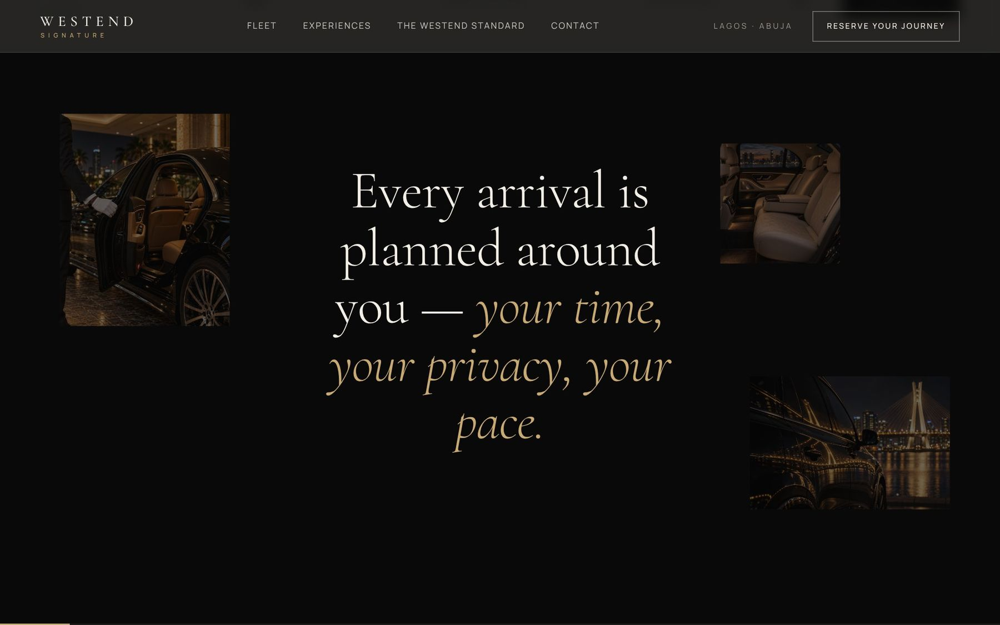
One GSAP ticker drives everything; Lenis smooth scroll only on fine pointers
PerformanceHeader dims to 60% on scroll down, returns on scroll up, hover or focus
Wayfindingprefers-reduced-motion: no pinning, parallax, smooth scroll or reveals
Content stays visible if CDN scripts fail or JavaScript is off
ResilienceMenu traps focus and makes the page inert; dialog restores focus
KeyboardRounded consent checkboxes with 44 px tap areas
TouchBehaviour documented in README.md and verified in the source.17
Testing & validation
Page load
Desktop 1440 × 900 and mobile 390 × 844 load with no script errors, with and without GSAP and Lenis
PassVehicle view
“Explore this vehicle” opens the dialog on desktop and phone; Escape closes it
PassPickup suggestions
Typing “Murtala” lists three Lagos airport terminals from the built-in list
PassHero sequence
Scrolling changes the headline per car: “Quietly commanding.” → “The art of arriving.”
PassMobile menu
Opens full-screen with four destinations and a reserve action
PassWhatsApp delivery
Message arrival on the business number
Not checked hereUsability & outcomes
Participant tasks, completion rates and enquiry conversion
Not testedAutomated browser checks on 31 October 2026. No participant usability study.18
What shipped, and what is unknown
Implemented
A connected browse-to-WhatsApp experience
Scroll-driven six-car hero · Pinned fleet showcase · Dashboard vehicle view · Suggestion-led booking form · Pre-written WhatsApp enquiry · Reduced-motion and no-JS fallbacks
Not established
Business and user impact remain unmeasured
No conversion baseline · No user study · Imagery is AI-generated, not the real fleet · Email and phone not yet configured · Privacy and terms are unreviewed templates
Implementation outcomes only; no conversion or revenue claims.19
Priority improvements
Real fleet, real details
Replace the 13 illustrative images with Westend’s own vehicles. Add email and phone. Complete and review privacy and terms.
ContentLighter first visit
Defer the hero sequence on slow connections and measure load on mid-range Android phones over mobile data.
PerformanceEvidence & iteration
Run five task-based sessions per audience and count WhatsApp hand-offs before making any conversion claims.
ResearchProposed work, not implemented.20
Arrive exceptionally.
Enquire simply.
Niyi Yaroglah
Experience Designer & Creative Director · Vision and Sounds
S1index.html: HTML, CSS and JavaScript
S2README.md and assets/images/IMAGE-README.md
S3Git history, 24–26 October 2026 (35 commits)
S4Desktop and mobile captures, 31 October 2026
S5Case-study format: Westend Africa UX/UI case study
S6Presentation concepts: supplied device mockups
All interface images are captures of the real site. Vehicle and venue imagery inside them is AI-generated.22